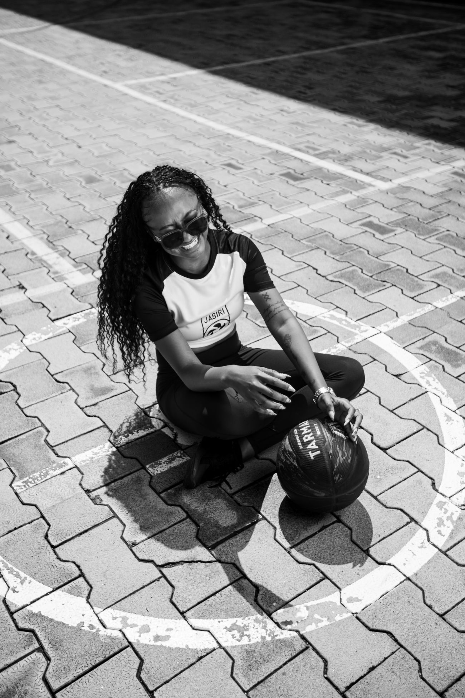

Conversations with the athletes, innovators, and leaders formalizing African sport.

From Nairobi courts to international attention — building a career one verifiable game at a time.
How data is reshaping coaching, scouting, and welfare across East African sport.
An honest conversation with an administrator about going from notebooks to a real operating system.
Why the culture around the game matters as much as the game itself.
Episode lineup is illustrative — full series to be announced.
Subscribe and stay #LockedIn to the stories moving African sport forward.
Join the Community →